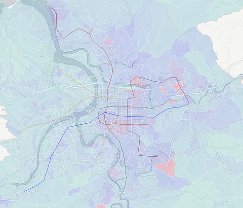

On November 24, 2018, ten referendums were held in Taiwan alongside midterm local elections. An interactive data visualization to help people understand what the results meant.
View project →
[02]

Taipei Income Map
A visual story of income distribution across Taipei, built from thousands of rows of open data. Income inequality made navigable.
View project →